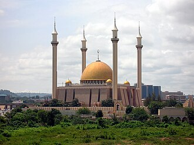

Voorstelling
La Mosquée nationale d'Abuja est l'un des plus importants sanctuaires islamiques de la ville d'Abuja, la capitale de la république du Nigeria.
مسجد أبوجا الوطني مَعروف كذلك بِالمسجدِ الوطنيِ النايجيريِ، أو المسجدُ الوطنيُ لنيجيريا. بُنِيَ المسجد في عام 1984 ولَيسَ مفتوحَاً لغير المسلمينِ أثناء وقت الصلواتِ.
The Abuja National Mosque, also known as the Nigerian National Mosque, is the national mosque of Nigeria, located in the capital city, Abuja. The mosque was built in 1984 and is open to the non-Muslim public, except during congregational prayers.
Masjid Nasional Abuja, juga dikenal sebagai Masjid Nasional Nigeria, adalah masjid nasional di Nigeria, sebuah negara dengan populasi Muslim besar. Masjid tersebut dibangun pada tahun 1984 dan terbuka untuk publik non-Muslim, kecuali selama salat berjemaah. Ustadz Musa Mohammed adalah kepala Imam.
ابوجا قومی مسجد، جسے نائیجیریا قومی مسجد بھی کہتے ہیں، نائیجیریا کی قومی مسجد ہے۔ اس کی تعمیر 1984 میں ہوئی تھی۔ اہم مواقع کو چھوڑکر غیر مسلموں کو بھی اس میں آنے کی اجازت ہے۔
Die Nigerianische Nationalmoschee ist eine Moschee in der nigerianischen Hauptstadt Abuja.
La Mezquita Nacional de Abuya es la mezquita nacional de Nigeria. Fue construida en 1984 y está abierta al público no musulmán, excepto durante las oraciones colectivas.
La moschea nazionale di Abuja, o moschea nazionale nigeriana, è una moschea di Abuja, capitale della Nigeria. L'imam è Ustaz Musa Mohammed.
Mesquita Nacional de Abuja, também conhecida como a Mesquita Nacional Nigeriana, é a mesquita nacional da Nigéria, um país com uma considerável população muçulmana. A mesquita foi construída em 1984 e não está aberto aos não-muçulmanos durante orações, foi a primeira mesquita da Nigéria. Ustaz Musa Mohammed é o chefe.
阿布贾国家清真寺，亦称尼日利亚国家清真寺，是尼日利亚的国家清真寺。尼日利亚大量人口信奉伊斯兰教。该清真寺建于1984年，除集会活动时间外，也对非伊斯兰教徒开放。
Национальная мечеть Абуджа — национальная мечеть в Абудже, Нигерия. Была построена в 1984 году. Помещения мечети включают в себя: основной молельный зал, библиотеку, конференц-зал и религиозную школу.
Abujas nationalmoské, även känd som Nigerias nationalmoské, är nationalmoskén i Nigeria, ett land med betydande muslimsk befolkning. Moskén byggdes 1984 och är inte öppen för icke-muslimer. Huvudimam är Ustaz Musa Mohammed.
Moscheea Națională din Abuja este o moschee din orașul Abuja, Nigeria. Aceasta este una dintre cele mai celebre atracți ale orașului și este moschea națională a acestei țări.
Op de kaart
Documenten en links
- Wikipédia — Français
- Wikipédia — العربية
- Wikipédia — English
- Wikipédia — Bahasa Indonesia
- Wikipédia — اردو
- Wikipédia — Deutsch
- Wikipédia — Español
- Wikipédia — Italiano
- Wikipédia — Português
- Wikipédia — 中文
- Wikipédia — Русский
- Wikipédia — Svenska
- Wikipédia — Română
- Wikidata — Q1430127
Gegevens: Wikidata (CC0), elke 3 maanden bijgewerkt. Het jaar is de oudst bekende bouwdatum van het gebouw: voor een gebouw dat later een moskee werd (zoals de Hagia Sophia), is het die van het oorspronkelijke gebouw. Foto's: Wikimedia Commons, maker en licentie op de pagina van elke foto.